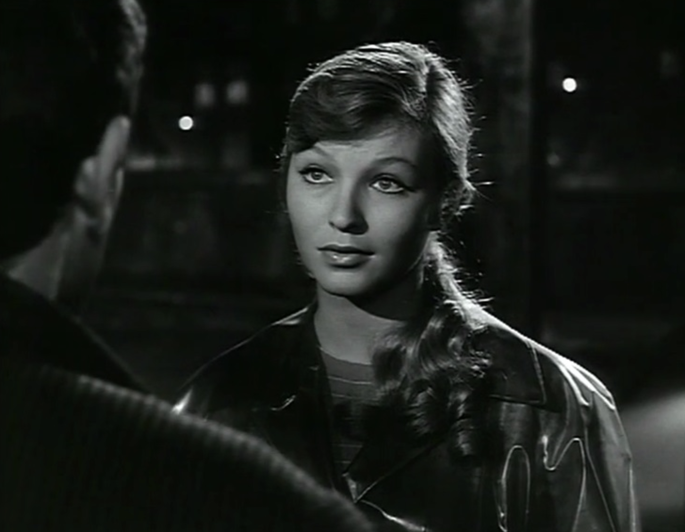

Crime and Punishment. Part IV notes
- ch 1 Svidrigailov in R's room
"Can this be a continuation of my dream?" (281).
Sv feels a lot of affinity to Raskolnikov.
"a common point between us" (287)
"apples from the same tree" (290)
R knows how Sv feels "Why did I think that sth like that must be going on with you?" (287)
Sv cannot love any more (291)
Sv is bored (284, 285)
afterlife is a bathouse with spiders (289)
Sv killed Marfa and Filka
Marfa is a relative of Luzhin.
Marfa bought Sv (285)
- Chapter 2 Scandal Scene with Luzhin and the Raskolnikov family
the discussion is what is love for Luzhin
Love is an act of domination and transaction.
L marries Dunia because she is a second-hand commodity that Luzhin can purchase cheeply.
love as a rational egoist understandts it.
A demonstration for R is his self-interest theory
"I decided to take you, so to speak, after a town rumor concerning your good name had spread throughout the neighborhood" (1993, 306)
- Ch 3
Luzhin's monologue about love as domination.
silent confession to Razumikhin (314)
Razumikhin becomes Dunia's brother and Pulheria's son (314).
- ch. 4 Raskolnikov at Sonia's Room
Sonia's room (315)
R no God and everyone will perish (321)
R tells truth to make Sonia desperate. Psychological violence.
Sonia: "God won't make it happen" (320)
R you destroyed yourself in vain (322)
R what does God do for you in return (324)
R: Sonia is a holy fool (324)
R: Lizavet is a holy fool (325)
John's gospel: parable of Lazarus.
Sonya is the reader "And he that was dead came forth" (328)
R: explains to Sonia that they are the same (329). No way
S: "he must be so unhappy" (330)
Svidrigailov eavesdrops on Sonia and Raskolnikov (331)

Figure 1. Sonia from French Crime and Punishment (1956)
- ch. 5 Second Interviiw with Porfiry
an office with partition (332)
a surprise behind the partition
Porfiry (a bufoon, self-identifies (341))
P provokes R (axe, Napoleon, faints, pale (341, 342))
offers friendship
offers water. R rejects water (344).